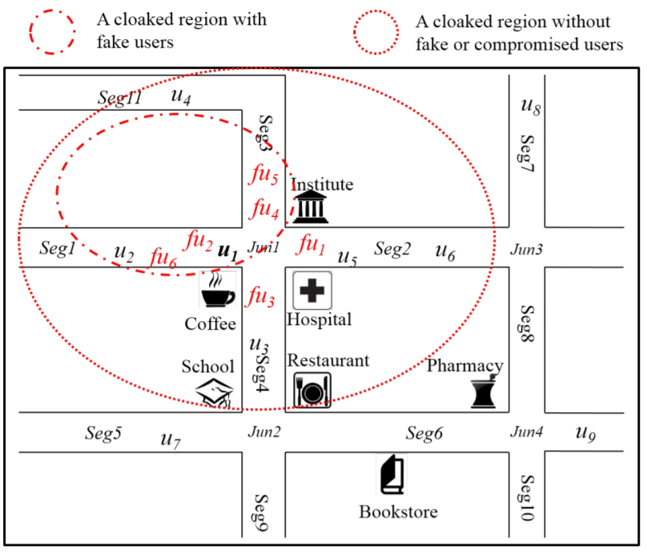
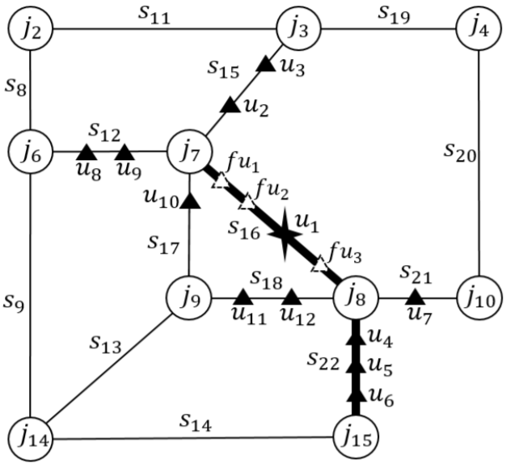

kTrustee
kTrustee is a trust-aware location cloaking mechanism that is resilient to location injection attacks and guarantees a lower bound on the user's in-distinguishability.We make three original contributions:
- We first propose and characterize location injection attacks that can compromise users' privacy setting of k-Anonymity in any existing CLPM. We experimentally demonstrate the effectiveness of such attacks through simulations.
- We propose the notion of trust in CLPMs and design a suite of trust-based location cloaking algorithms that can mitigate the impact of location injection attacks.
- We present the theoretical and experimental analyses of the proposed approaches to demonstrate and validate their effectiveness and resilience against location injection attacks.
Location injection attack
In a location injection attack, an attacker can distinguish the fake users since these users are either created or controlled by the attacker. As a result, the number of remained users in the cloaked region becomes less than the user’s privacy requirement.

k-Trustee
We introduce three cloaked region expansion schemes in the cloaking-based location privacy mechanism guaranteeing k-Trustee: random expansion, greedy expansion and hybrid expansion.

Publications
- Lei Jin, Balaji Palanisamy and James Joshi "Compromising Cloaking-based Location Privacy Preserving Mechanisms with Location Injection Attacks", Proc. of 21st ACM Conference on Computer and Communications Security (CCS 2014), Scottsdale, Arizona, USA. [PDF]
- Lei Jin, Balaji Palanisamy, James Joshi and Chao Li, "k-Trustee: Location Injection Attack-resilient Anonymization for Location Privacy", in submission.